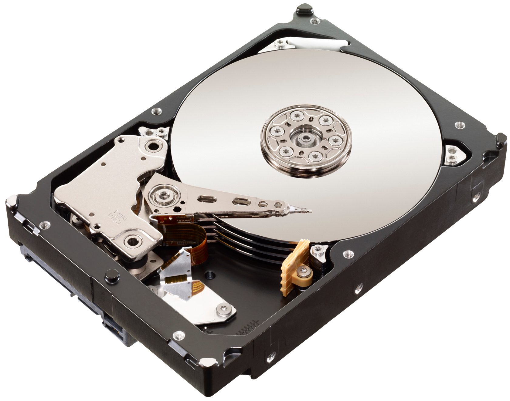

Hardware e Software

Agora, vamos nos aprofundar no conceito de hardware e software. Veremos as diversas partes que constituem o hardware de um computador, como o gabinete, monitor, placa-mãe, mouse, entre outros. Também entenderemos melhor o que é software e qual é a sua função.
Hardware

O hardware é composto por todos os componentes físicos de um computador, incluindo as peças internas. Alguns exemplos são o monitor, o teclado, o mouse e o gabinete. A seguir, veremos os principais componentes que constituem o hardware de um computador.
Gabinete
Um gabinete de computador é a estrutura que abriga os componentes internos de um computador, como a placa-mãe, o processador, a memória RAM, o disco rígido e a fonte de alimentação.

Monitor
O monitor é o dispositivo de saída de vídeo de um computador, responsável por exibir imagens, textos, vídeos e gráficos gerados pela máquina. Ele funciona como uma tela visual onde o usuário interage com o sistema operacional e os programas.
Mouse
O mouse utilizado para controlar o cursor na tela de um computador. Ele permite ao usuário
realizar ações como clicar, arrastar e selecionar itens, facilitando a navegação e a interação
com programas e sistemas operacionais.
Botão esquerdo: O mais utilizado, serve para selecionar, clicar em ícones,
abrir arquivos e realizar a maioria das interações com a interface
Botão direito: Usado para abrir menus contextuais, fornecendo opções adicionais
de ação sobre o item clicado.
Roda de rolagem(Scroll): Localizada entre os botões, permite rolar páginas para
cima e para baixo. Em alguns mouses, a roda também pode ser clicada como um terceiro botão.

Teclado
Um teclado é um periférico de entrada que permite ao usuário inserir dados e controlar funções no computador por meio do pressionamento de teclas. A maioria dos teclados conta com, pelo menos, cinco grupos de teclas.
Teclas de função: As teclas de função são um conjunto de teclas localizadas na
parte superior do teclado, identificadas como F1, F2, até F12. Elas são usadas para executar
comandos específicos de acordo com o software ou o sistema operacional em uso. Por exemplo, a
tecla F1 geralmente abre a ajuda de um programa, F5 é comumente usada para atualizar uma página
ou janela.
alfa-numérico: As teclas alfanuméricas são aquelas que contêm letras, números e
alguns símbolos. Elas são parte fundamental do teclado e são utilizadas para inserir texto e
números em aplicativos e documentos.
Teclas de navegação: Estas teclas servem para você navegar por documentos ou
páginas web e editar texto. Entre elas estão End, Home, Page up, Page Down, Insert e as teclas
de direção.
Teclado numérico: O teclado numérico, também conhecido como "numpad", é uma
seção do teclado que contém apenas as teclas numéricas (de 0 a 9) e algumas operações
matemáticas básicas. Ele é geralmente encontrado no lado direito dos teclados de desktop e em
alguns laptops.
Placa-mãe
A placa-mãe, também conhecida como "motherboard", é um dos componentes mais importantes de um computador, servindo como a principal placa de circuito que conecta e comunica todos os outros componentes do sistema.

Processador(CPU)
O processador, também conhecido como CPU-Central Processing Unit (Unidade central de processamento), é o componente central de um computador responsável por executar instruções e realizar cálculos. Ele é muitas vezes considerado o "cérebro" do sistema.

memória RAM
A memória RAM-Random Access Memory (Memória de acesso aleatório) é um tipo de memória volátil utilizada em computadores e dispositivos eletrônicos para armazenar dados temporariamente enquanto o sistema está em funcionamento.
Armazenamento (HDs e SSDs)
HDs e SSDs são unidades de armazenamento que você pode armazenar arquivos no longo prazo. Eles
armazena todos os dados do computador mesmo quando este está desligado.
HD: Do inglês "Hard Disk Drive" (Unidade de disco rígido) por isso também e
chamado de HDD, utilizam discos magnéticos giratórios para armazenar dados. Eles oferecem
grandes capacidades a um custo mais baixo, mas têm velocidades de leitura e gravação mais lentas
em comparação aos SSDs.

SSD: Pode ser referido como “Solid-State Drive” (Unidade de Estado Sólido)
quanto como “Solid State Disk” (Disco de Estado Sólido).Utilizam memória flash para armazenar
dados, proporcionando velocidades de leitura e gravação significativamente mais rápidas do que
os HDDs. São mais resistentes a choques, mas geralmente mais caros.
Placa de Vídeo
Uma placa de vídeo, também conhecida como GPU-Graphics Processing Unit (Unidade de processamento gráfico), é um componente de hardware responsável por gerar e renderizar gráficos e imagens em um computador.Existem dois tipos de placas de vídeo: dedicadas (que são instaladas em slots PCIe na placa-mãe) e placas integradas (que vêm embutidas na CPU e são adequadas para tarefas básicas, mas limitadas em performance).
Software

O software consiste em um conjunto de instruções programadas que direcionam um computador ou dispositivo eletrônico a realizar tarefas específicas. Sendo composto por elementos que não são palpáveis. Esse termo abrange uma variedade de programas e aplicativos utilizados em dispositivos como computadores, smartphones e tablets. O software desempenha um papel fundamental na experiência do usuário, possibilitando a execução de atividades que vão desde a navegação na internet até o gerenciamento de informações complexas.
Tipos de Software
Software Básico: Software básico refere-se a programas que fornecem as funções
fundamentais necessárias para o funcionamento de um computador ou dispositivo.Sistemas
operacionais são exemplos de software básico.
Exemplos: Windows, macOS, Linux, Android.
Software aplicativo: Software aplicativo refere-se a programas projetados para
ajudar os usuários a realizar tarefas específicas em um computador ou dispositivo.Esses
softwares são construídos para atender a diversas necessidades e melhorar a produtividade.
Exemplos: Editores de texto, planilhas, navegadores, programs de edição de
imagens e etc